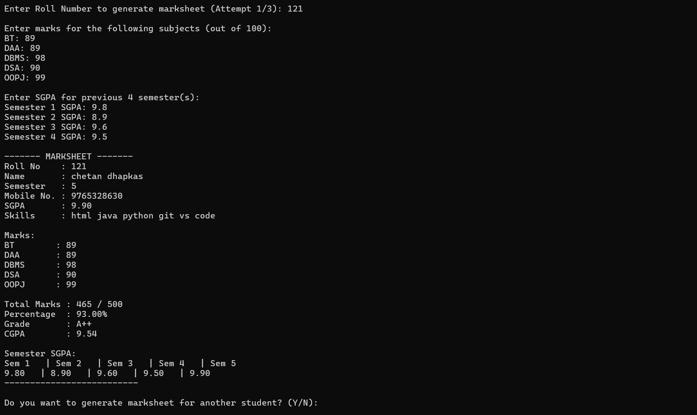

C Language Console-Based Project
This Student Management System is a console-based application developed using the C programming language. The project is created to understand how student records can be stored, accessed, updated, and deleted using basic programming logic.
The entire system runs in the terminal and does not use any external libraries or databases. All operations are handled using core C concepts.
menu-driven logic with switch-caseThis project uses file handling to store data permanently.
fopen() to open filesfwrite() to store student recordsfread() to read stored datafclose() to close the fileBecause of this, student data is not lost when the program is closed.
Compile and execute the program using the following commands:
gcc student.c -o student
student
Below screenshots show the real output of the program:
The video below shows the actual working of the program including adding, viewing, and searching student records.
Chetan Dhapkas
Engineering Student
C Programming & Web Development Learner